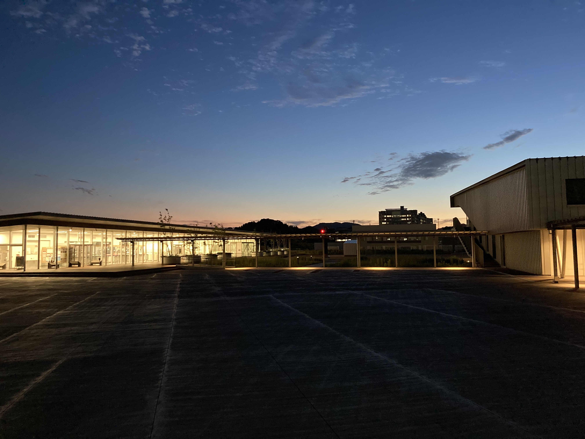
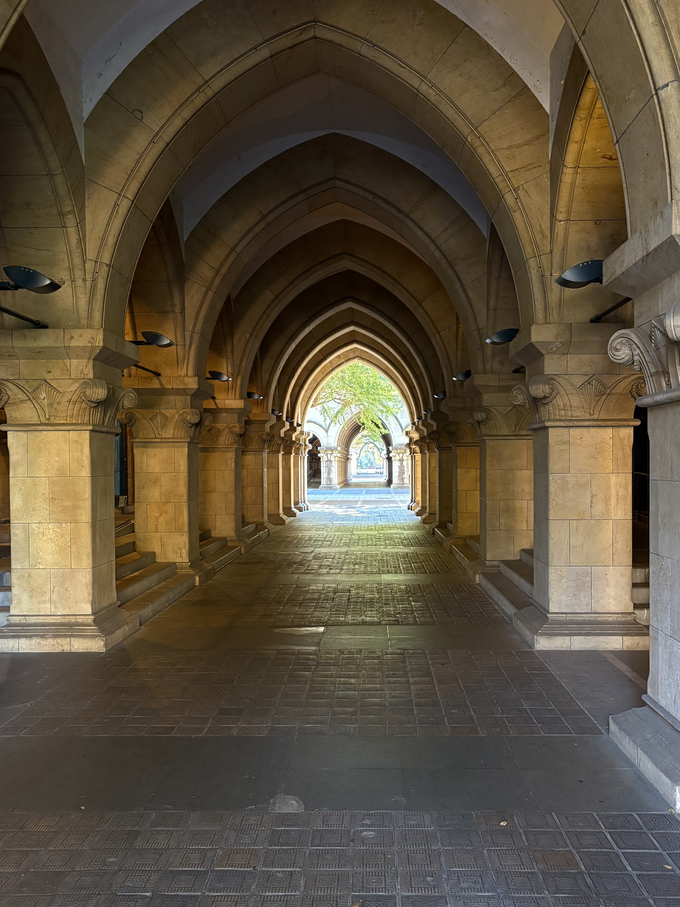

大坪 快 / Kai Otsubo
多くのヒトが集まった時に生じる現象を研究する社会心理学者です。
特に、以下のような問いに取り組んでいます。
- 集団同士の争いはなぜ起こるのか？
- 見知らぬ他者間の大規模な協力はどのように成立するのか？
- これらは人類史のなかでどう進化してきたのか？


最近の活動
- 社会的ジレンマにおける独特な行動パターンである"Hump-shaped戦略"に関するプレプリントをarXivにアップしました。
所属
- 東京大学大学院人文社会系研究科 社会文化研究専攻 社会心理学専門分野（研究室Webサイト）
- 独立行政法人日本学術振興会
経歴
- 2025/04 - 独立行政法人日本学術振興会 特別研究員（DC2）
学歴
- 2024/04 - 東京大学大学院人文社会系研究科
- 2022/04 - 2024/03 九州大学大学院人間環境学府
- 2018/04 - 2022/03 九州大学教育学部
学位
- 2024/03 修士（心理学） 九州大学
受賞歴
- 2024/03 九州大学大学院人間環境学府 学府長賞 優秀賞
- 2023/12 日本人間行動進化学会（HBES-J）若手発表賞
- 2023/03 日本社会心理学会 若手研究者奨励賞